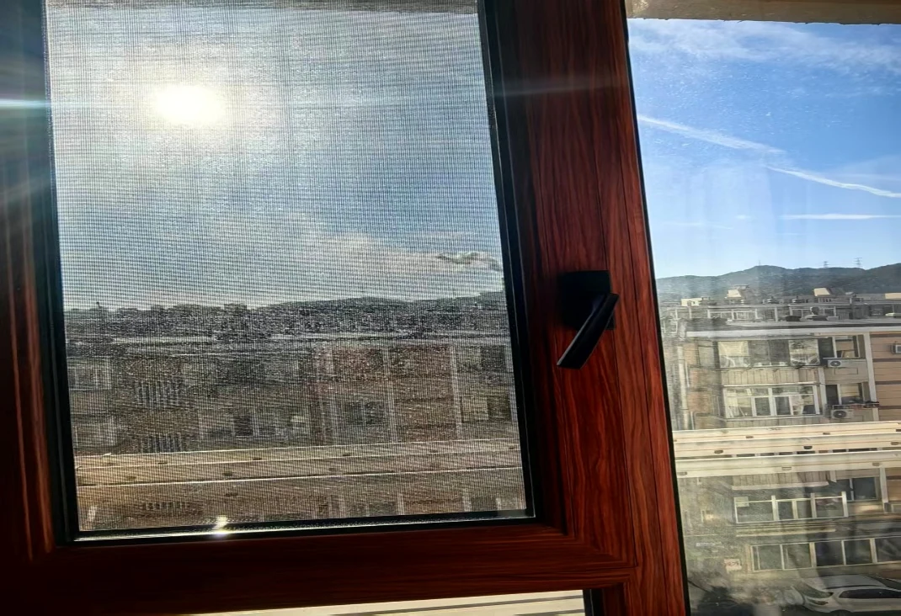
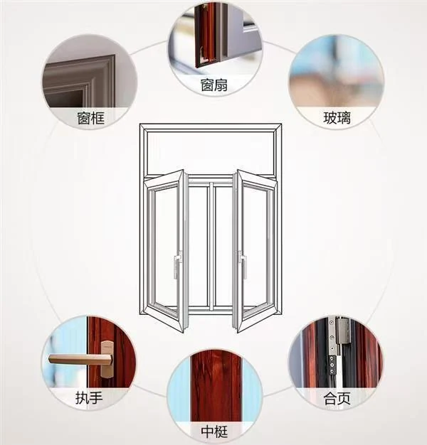
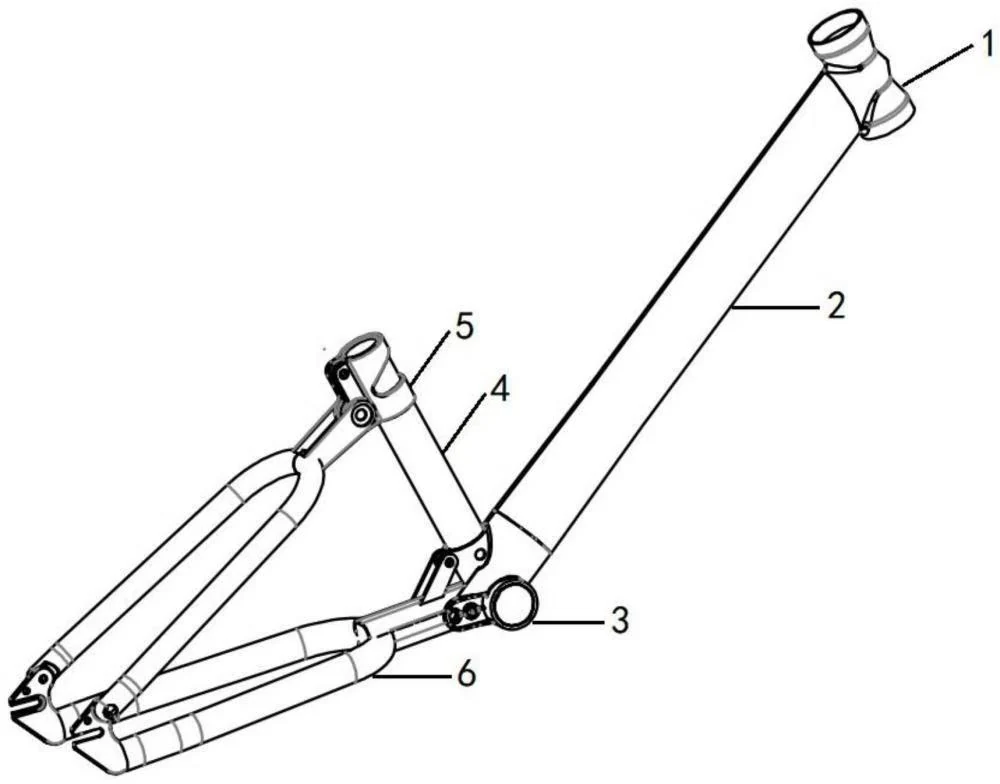

大连交通大学 · 智能建造23
我的原作材料力学在生活中的应用案例
郭佳傲
1. 意义
材料力学是研究材料在外力作用下的力学性能和变形规律的学科，其核心在于通过分析构件的受力状态、应力分布和变形特征，确保结构在满足强度、刚度和稳定性要求的前提下，实现安全、经济、美观的设计。在日常生活中，从建筑结构到交通工具，从家具用品到运动器材，无不体现着材料力学的应用价值。
2. 影响因素
构件的力学性能主要受以下因素影响：
材料性质：包括弹性模量、屈服强度、抗拉强度、抗压强度等
截面形状：不同截面形状（矩形、圆形、工字形等）的惯性矩和抗弯截面系数不同
受力状态：拉、压、弯、剪、扭等基本受力形式
约束条件：固定端、铰支端、自由端等不同约束方式
荷载类型：静荷载、动荷载、冲击荷载等
3. 趋势
现代结构设计呈现以下趋势：
从单纯追求强度向兼顾强度、刚度和稳定性转变
从经验设计向基于有限元分析的精确设计发展
从单一材料向复合材料、智能材料应用拓展
从传统结构形式向大跨度、超高层、轻量化方向发展
4. 力学图示
┌─────────────────┐ │ 荷载F │ │ ↓ │ │ ┌─────────┐ │ │ │ 构件 │ │ │ └─────────┘ │ │ ↑ │ │ 反力R │ └─────────────────┘
图1：构件受力简图
（二）生活中体现（50分）
案例一：铝合金门窗的强度设计
受力/变形标注：
玻璃自重产生均布荷载q
铝合金框承受弯曲变形
角部产生应力集中
密封胶条提供约束反力
配文说明：
铝合金门窗的设计充分体现了材料力学的弯曲理论。玻璃自重作为均布荷载作用在铝合金框上，使框产生向下弯曲变形。根据材料力学原理，铝合金框的截面采用中空矩形设计，通过增大惯性矩来提高抗弯刚度。在角部连接处，由于应力集中效应，通常采用加强角码或增加壁厚来增强承载能力。密封胶条不仅起到防水密封作用，还提供了弹性约束，减小了玻璃的振动和变形。


案例二：自行车车架的强度优化

受力/变形标注：
车架承受骑行者体重和踩踏力
上管受拉，下管受压
立管承受弯曲和压缩组合变形
后叉承受扭转变形

配文说明：
自行车车架是典型的空间桁架结构，各杆件主要承受拉压作用。上管在骑行时主要受拉，下管受压，立管同时承受弯曲和压缩。后叉在转弯时承受较大的扭转载荷。现代自行车车架采用三角形结构，利用三角形稳定性原理提高整体刚度。材料选择上，从传统的钢材发展到铝合金、碳纤维复合材料，通过优化管材截面形状（如异形管、变截面管）和壁厚分布，实现轻量化和高强度的统一。
（三）对照《结构设计原理》内容（30分）
1. 钢筋配置考量
根据《结构设计原理》，构件的配筋设计需满足以下要求：
（1）最小配筋率控制
受弯构件纵向受力钢筋的最小配筋率：ρ_min = max(0.2%, 0.45f_t/f_y)
受压构件全部纵向钢筋的最小配筋率：0.6%（一级抗震）
梁侧构造钢筋：当梁腹板高度≥450mm时，每侧配筋率≥0.1%
（2）配筋方式选择
单筋矩形截面：适用于弯矩较小的梁板构件
双筋矩形截面：当受压区混凝土不足时，在受压区配置受压钢筋
T形截面：充分利用板作为翼缘，提高抗弯承载力
（3）钢筋锚固与搭接
受拉钢筋基本锚固长度：l_ab = α·f_y·d/f_t
搭接长度：ll = ζ_l·l_a，受拉搭接ζ_l = 1.2~1.6
2. 结构设计原则
（1）承载能力极限状态
正截面受弯承载力：M ≤ α_1·f_c·b·x·(h_0 - x/2) + f_y'·A_s'·(h_0 - a_s')
斜截面受剪承载力：V ≤ 0.7·f_t·b·h_0 + f_yv·(A_sv/s)·h_0
（2）正常使用极限状态
裂缝宽度验算：w_max ≤ w_lim
挠度验算：f ≤ f_lim
（3）抗震构造措施
强柱弱梁：柱端弯矩设计值≥1.2倍梁端弯矩设计值
强剪弱弯：梁端剪力设计值≥1.2倍按实配钢筋计算的抗弯承载力对应的剪力
强节点弱构件：节点核心区受剪承载力≥1.2倍梁端受剪承载力
3. 设计实例对比
以铝合金门窗为例，其设计思路与钢筋混凝土梁类似：
截面选择：采用中空矩形截面，增大惯性矩，提高抗弯刚度
材料选择：铝合金屈服强度约200MPa，远高于混凝土抗压强度，但弹性模量较低（约70GPa），需通过合理截面设计满足刚度要求
连接构造：角部采用角码连接，类似梁柱节点的加强构造
通过将材料力学原理与结构设计原理相结合，可以更好地理解日常生活中各种结构的设计理念，为工程实践提供理论指导。
这是一份便于网页阅读的原作视图，保留提交内容的文字、图片和基本顺序；公开页面不显示学号。